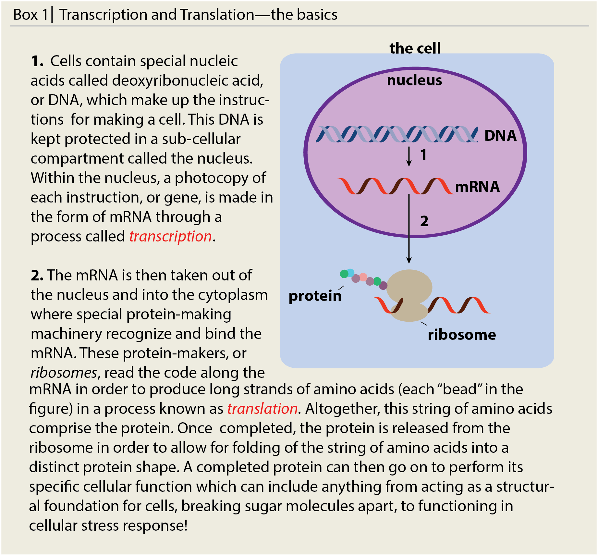
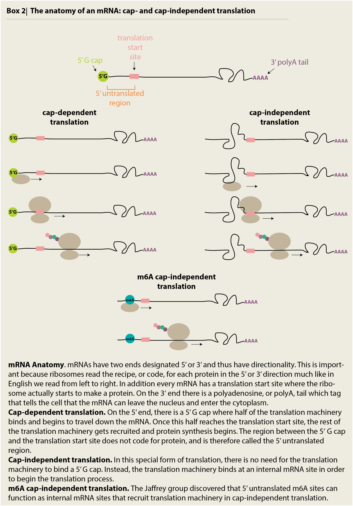

Every day we encounter stressful situations that challenge us emotionally, mentally and physically. Consider realizing you have just missed the deadline to submit an important assignment or breaking up with someone you’ve dated for years. These are stressful situations that cause heartaches and headaches. Stress can also cause acute, physical responses -- like feeling sick to your stomach, clammy, and sweaty even when the stress itself is not physical, such as presenting in front of a group.
All the way down to a cellular level, our bodies react to stressful situations. From hormones released as a result of emotional stress, to physical stresses such as excessive heat, high salt, lack of oxygen, and lack of energy sources, each of these physical stressors causes our cells to undergo a stress response to protect and cope with the aggressors.
But what is a cellular stress response? And how do our cells go about mounting a stress response?
When we think about how cells mount a stress response it’s useful to compare the stressor to a raging wildfire. In order to deal with the fire, we need firefighters who will directly work to put the fire out. In addition, we need evacuation personnel to help get civilians living in the area to safety and medical personnel to treat injuries.
Every cell is comprised of four important macromolecules: lipids, nucleic acids, carbohydrates, and proteins. In this article, we are going to focus on two of these: nucleic acids (that is, DNA and RNA) and proteins. While we often think about proteins as structural molecules like the keratin in our hair and skin, there are many more types of proteins. Our cellular ‘workers’ are in fact proteins that help build up our cells, break down sugar into molecular energy and, importantly for this article, make up a whole host of proteins that work during stress like our firefighters and medical personnel.
Some of these proteins, like Hsc70, are around all the time regardless of whether there is stress or not, and in a way, they are ‘primed’ at any time for a stressor to attack (Santoro review). Such proteins are called constitutively expressed. These are the first responders to any sight of stress. Proteins like chaperones physically bind heat-sensitive proteins and prevent them from falling apart during excessive heat. Different proteins, including protein degradation machinery, help clear up the mess that is caused by the stress.
Other proteins are made only in response to stress. For example, Hsp70-1a and Hsp70-1b two members of the Hsp70 family (to which the constitutive Hsc70 mentioned above also belongs to) are induced after stress. In addition, even constitutive proteins are up-regulated, or more highly made, to increase the levels of these proteins in the cell and allow more of these proteins to assist in the stress response (Daugaard et al.).
Think of this as a way for the cell to expend energy on making proteins only when they need to be around, because energy is precious. In order to synthesize these stress response proteins, the cells make a photocopy of a recipe (mRNA) from the instruction manual (DNA). Cells then use the mRNA photocopy of the instructions to make proteins, which are chains of amino acids, in a process we call translation (see Box 1). Cells need to make the mRNA photocopy intermediate, because DNA is very precious and cells want to keep it safe and tucked away in the nucleus to prevent any damage, or mutations. Each unique mRNA contains the instructions for one unique protein, and by controlling the amount of mRNA and the rates of mRNA synthesis and degradation, the cell can control how much of that unique protein is made. In the end, cells can tightly control when to synthesize backup stress response proteins if the stress is prolonged.

During the stress response, proteins that are not necessary and might be in the way or get damaged - like the civilians in a wildfire - are packaged away to safety in cellular components called stress granules (see Ray’s article). The mRNAs that code for non-essential proteins are also packaged away into these granules so that the cell doesn’t waste precious energy on making proteins that won’t help in the stress response. In this way, these mRNAs are evacuated to prevent their translation into proteins. Once the stress is gone, these granules made up of proteins and RNA can dissociate and release their contents back into the cell to do their work.
Think about a cell for a moment - it’s quite a crowded environment with many, many proteins running around. During a cellular stress, the cell needs to identify which mRNAs and proteins are essential for stress response and which need to be evacuated into stress granules. How on earth can the cell recognize which mRNAs and proteins fall under each category?
How do we as humans recognize which people are probably civilians and which are firefighters?
We can easily distinguish a civilian from a firefighter by their distinct uniform. In the same way, the cell puts chemical ‘tags’ on some mRNAs and proteins in order to identify which are essential for stress response and which are not. While there has been some research into what these tags are (Frye et al. 2016 review on RNA modifications), a key paper was recently published in the prominent journal Cell by the Jaffrey group at Cornell University in 2015 (Meyers et al. 2015). The group established that a chemical tag called a methyl group is stuck on the mRNAs of certain stress response genes, including a key gene, heat shock response 70 (Hsp70). This methylation happens in a special region called the 5’ untranslated region, on the N6 position of adenosine and leads to a process called m6A cap-independent translation.
This ‘cap-independent translation,’ due to the methylation tag on the Hsp70 mRNA, is a very specific type of translation that occurs during stress. While mRNAs are normally translated from the 5’ cap (i.e. cap-dependent), stress response genes are translated in slightly different ways that do not need to start from the 5’ cap (see Box 2). In their paper, the Jaffrey group illustrated that the a 5’ UTR m6A was sufficient, or enough, to serve as a tag for cap-independent translation by comparing levels of translation from random mRNAs that did or did not have the methylation tag. Only after adding cellular stress (like stressful levels of heat), did they find translation occurring from the mRNAs with 5’ UTR m6A “tags.” It was important to use a non-stress, random mRNA which does not usually have the 5’ UTR m6A tag in this experiment, otherwise it would not be possible to say for sure whether or not the tag was responsible for promoting cap-independent, stress response translation. Thus, the group concluded that this N6A methylation tag works in two ways: first, it is used to tell apart stress response genes from non-stress response genes and second, it promotes specialized cap-independent translation during stress.

Why are there two forms of translation? One idea is that it is another way for the cell to regulate the production of proteins it needs at the moment. The cell uses layers upon layers of control mechanisms like these to make sure it uses energy efficiently. This is especially important during times of stress, when for the most part energy production is actually turned off, and the cell really needs to make sure it is using the energy available for the most necessary processes. And it is for this reason the cell uses so many safeguards to ensure the proper stress response happens.
In this article we discussed the roles of a stress response at the cellular and molecular level. A stress left unresolved will lead to cell death - like the forest burning down due to the unchecked wildfire in our example. However, if too much energy is expended trying to save the cell, then the cell will also die. For these reasons, the stress response is tightly regulated. Researchers such as those in Jaffrey group spend their lives trying to understand the regulation of protein synthesis from mRNAs, while others try to understand how the cell recognizes specific stresses, and still others try to understand how proteins go about fixing problems during stress.
Further understanding these processes through research has become more important since similar processes have been found to underlie many human diseases. In particular, research into neurodegenerative diseases such as Huntington disease, Parkinson disease, and Amyotrophic Lateral Sclerosis (aka Lou Gherig’s disease or ALS) has revealed that the protein aggregation which appears to play a key role in disease is related to the same stress granules involved in cellular stress response. Thus, further insight and research into these processes is needed in order to understand not only how they work but what happens when these processes go wrong at the cellular level and how this impacts human health at the whole body level.
Santoro (2000). Heat shock factors and the control of the heat shock response. Biochemical Pharmacology 59:1(55-63). Frye et al. (2016). RNA modification: what have we learned and where are we headed? Nature Reviews Genetics 17(365-372). http://www.nature.com/nrg/journal/v17/n6/full/nrg.2016.47.html
Meyers et al. (2015). 5’ UTR m6A Promotes Cap-Independent Translation. Cell 163(999-1010). http://www.sciencedirect.com/science/article/pii/S0092867415013252